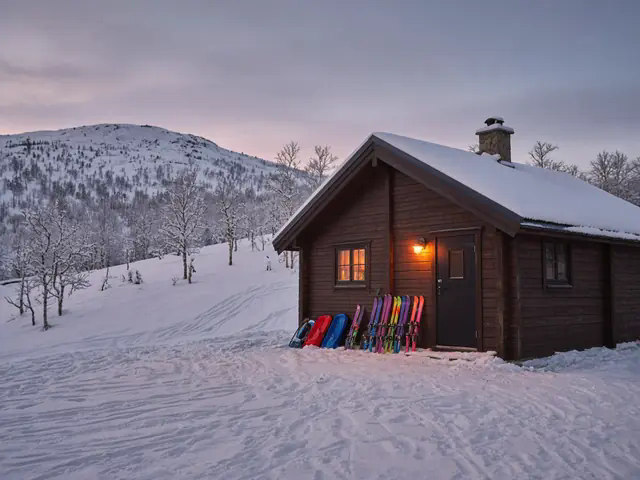
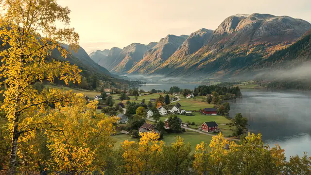
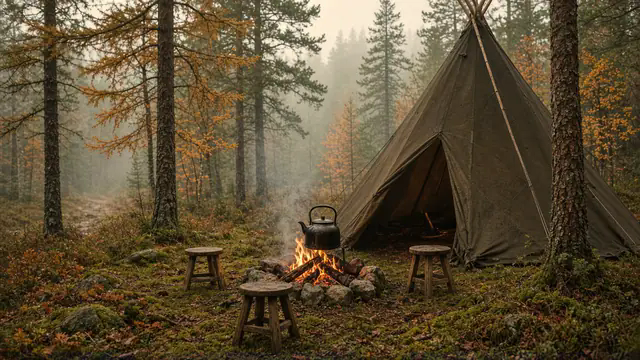

Åpent hverdager 06.45–17.15
Vi har en avdeling ved alpinbakken
Sæterlia er friluftsavdelingen til Bårdshaugen Barnehage. Resten av barnehagen holder til midt på Skei i Surnadal.
Illustrasjon. Bildet er ikke fra barnehagen.
Fra kvart på sju til kvart over fem
Store deler av året er det mørkt ute når vi åpner klokka 06.45. Revehiet tar imot de minste barna. Bjørnehiet har de eldste, de siste årene før skolen. Sæterlia er friluftsavdelingen, og den holder til ved alpinanlegget. Barnehagen har 15 faste ansatte. Klokka 17.15 stenger vi.

Ringe en avdeling
Gjelder det barnet ditt i dag, ringer du avdelingen direkte. Andre spørsmål tar du med kontoret.
Revehiet
de minste barna
954 97 759Bjørnehiet
de eldste barna
954 94 816Sæterlia
friluftsavdelingen ved alpinanlegget
410 79 426
Kontoret 957 67 873 · post@baardshaugen.no
Daglig leder Reetta Järvinen, 411 22 302, reetta@baardshaugen.no
Besøksadresse og postadresse: Bårdshaugvegen 25, 6650 Surnadal.
Søke plass
Du søker plass gjennom Surnadal kommune. Kommunen har ett felles opptak for alle barnehagene.
Frist for hovedopptaket er 15. februar.
[Fylles inn: hva som gjelder for søknader etter fristen]
Før du søker
Ring kontoret hvis du lurer på noe før du søker: 957 67 873.
[Fylles inn: om dere tar imot besøk før søknad, og hvordan]
Barnehagen i tall
- 46barn mellom 1 og 5 år
- 5,9barn per ansatt
- 56,8 %av de ansatte er barnehagelærere
- 4,9av 5 i samlet tilfredshet, foreldreundersøkelsen 2026
Tall fra Utdanningsdirektoratet. Bare 12 foreldre svarte på undersøkelsen (27,9 prosent), så det resultatet er usikkert.
Åpningstider og priser
- Åpent
- Mandag til fredag 06.45–17.15
- Stengt
- [Fylles inn: planleggingsdager og ferier]
- Kostpenger
- 405 kr i måneden
- Foreldrebetaling
- [Fylles inn]
Jobbe hos oss
Vi har 15 faste ansatte. 56,8 prosent er barnehagelærere, og vi oppfyller pedagognormen. Vil du jobbe her som barnehagelærer, fagarbeider eller vikar, kan du sende en åpen søknad.
Spørsmål og svar
Hva er Sæterlia?
Sæterlia er friluftsavdelingen vår. Den ligger ved alpinanlegget i Surnadal. [Fylles inn: hvem som går der og hvordan barna kommer seg dit]
Hvor mange voksne er det per barn?
Ifølge Utdanningsdirektoratet er det 5,9 barn per ansatt og 10,3 barn per barnehagelærer.
Hva sier foreldrene?
I foreldreundersøkelsen 2026 ga foreldrene 4,9 av 5 i samlet tilfredshet. Ute- og innemiljø og informasjon fikk 4,4. Bare 12 svarte (27,9 prosent), så resultatet er usikkert.
Hva må barnet ha med?
[Fylles inn: klesliste og hva barnehagen holder]
Om barnehagen

Bårdshaugen Barnehage AS eies av foreldrene og tar ikke ut utbytte. Pengene brukes i barnehagen, «til økt bemanning, miljø og innhold».
Målet er at barnehagen skal være et godt sted å være for barn og voksne. Visjonen er «Trygg på neste steg».
Styreleder er Espen Røv, 932 68 352. Følg oss på Instagram.